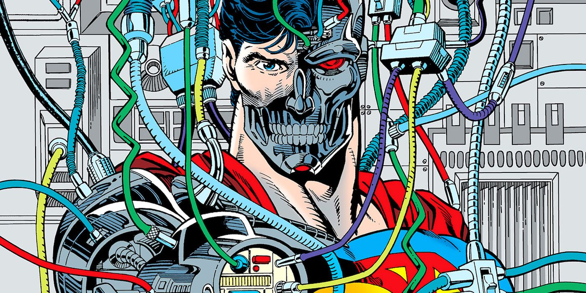

The Man of Tomorrow — and the Corps' most personal machine enemy.
Cyborg Superman
Henry "Hank" Henshaw was a brilliant astronaut, commander of the LexCorp shuttle Excalibur, until a solar flare tore his crew apart in Adventures of Superman #465–466 (1990, Dan Jurgens). His body crumbled to dust — but his consciousness survived, bodiless and raging, until it found Kal-El's birthing matrix and rebuilt itself in Superman's image. When the real Superman died, Henshaw returned wearing his face: the Cyborg Superman, debuting in Adventures of Superman #500 (June 1993) as one of the four replacement Supermen of the Reign of the Supermen.
His Green Lantern infamy was sealed in blood. Teaming with Mongul, Henshaw helped annihilate Coast City — seven million lives erased in an instant (Superman #80, 1993), the atrocity that broke Hal Jordan and set Emerald Twilight in motion. But Henshaw's story didn't end with Superman's revenge. Adrift and unkillable, his consciousness eventually found the Manhunters — the Guardians' discarded android army — and became their Grandmaster, upgrading them with Kryptonian technology and organic horror.
That made him the Green Lantern Corps' problem. As Grandmaster, Henshaw turned the Manhunters into a galactic plague, and during the Sinestro Corps War he was freed from Oa's Sciencells to serve as a Herald of the Anti-Monitor — the one being whose promise of true death Henshaw actually believed. He has been destroyed, disembodied, and reactivated more times than any villain in the mythos, and each return finds him more machine, more bitter, and more certain that the universe owes him an ending it refuses to give.
Keep exploring
Cyborg Superman — DC Comics. Non-commercial fan tribute.